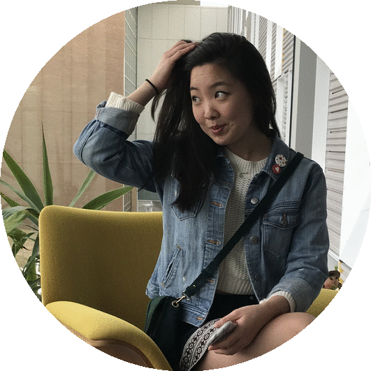
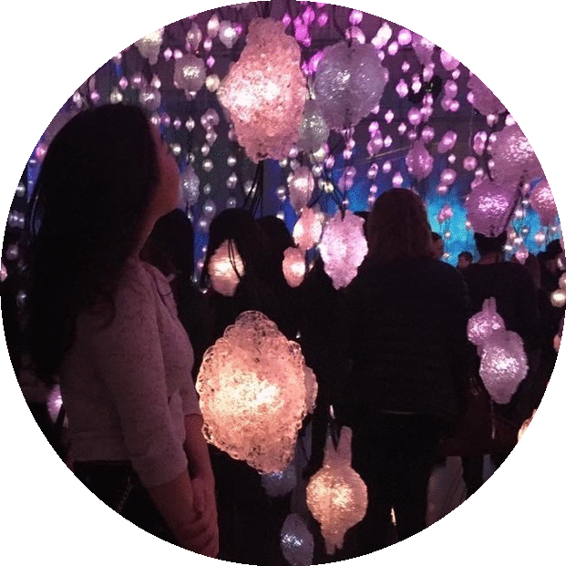
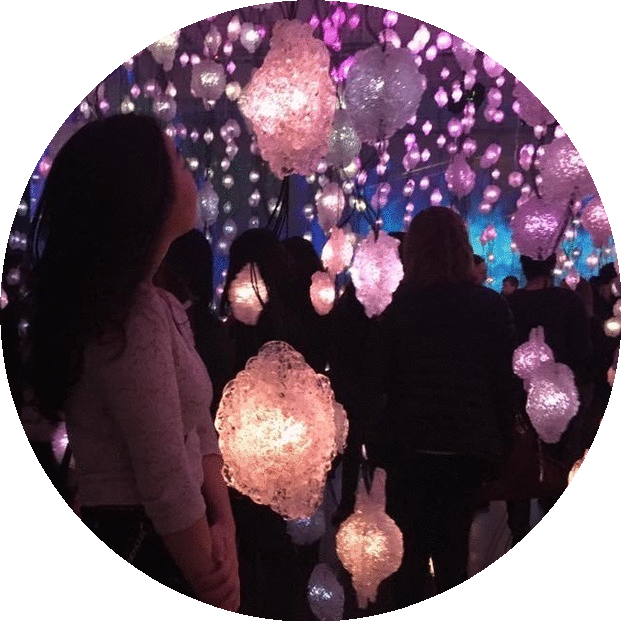
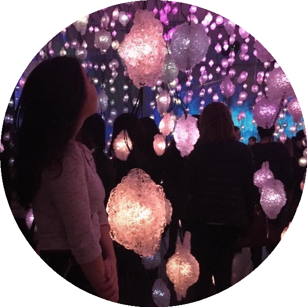

I am a IxD researcher & UX designer
exploring the intersection of interaction design, technology, and artistry to engage and empower communities both on and offline.
some things I've explored:
- Virtual Reality
- UI Design for Autonomous Systems
- Telepresence Robots
Education
Cornell University - Graduated: May 2018
B.S. Communication and Information Technologies
Minors: Information Science & Business
Work & Research Experience
Publications
Web-Based VR Experiments Powered by the Crowd. Xiao Ma, Megan Cackett, Leslie Park, Eric Chien, Mor Naaman. The Web Conference 2018 (WWW 2018). [PDF]
Awards
Kenneth Bissett Award 2018
Andrew Park Foundation Scholarship 2017
Sheila Turner Seed Award 2017
PwC Data Analytics Case Competition 2015 - 1st Place at Temple University
Leadership
Cornell CALS Career Services, Peer Advisor
Communication Student Advisory Board
Future Business Leaders of America - Phi Beta Lambda, President & Cornell Chapter Founder
Temple University Seminar, Peer Instructor



 



Socials